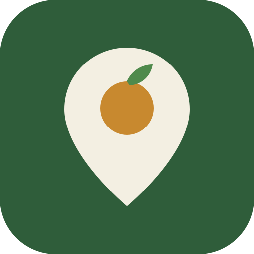
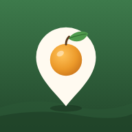

Orchard GPS
EN
中文
BM
Discard
Location
Latitude
—
Longitude
—
Elevation
—
Accuracy
—
Back to GPS
Farm details
Farmer's name
*
Location name (中文)
Location name (English / Malay)
WhatsApp to Stanley Woo
Version

果园坐标 · Orchard GPS · Dusun GPS
中文
English
Bahasa Melayu
Check your message to Stanley Woo
Back
Open WhatsApp
Share this app
WhatsApp
Copy link
Close
A new version is ready
Refresh
✕